Pendahuluan
Perkembangan teknologi website saat ini berkembang sangat pesat, terutama dalam pembuatan aplikasi web yang dinamis dan terstruktur. Salah satu framework PHP yang banyak digunakan dalam pengembangan website modern adalah Laravel. Laravel merupakan framework berbasis MVC (Model View Controller) yang menyediakan berbagai fitur untuk mempermudah developer dalam membangun aplikasi web secara lebih cepat, rapi, dan efisien.
Pada praktikum ini dilakukan pembelajaran mengenai dasar penggunaan Laravel meliputi migration, seeding, routing, model, controller, dan view. Praktikum dilakukan dengan membuat aplikasi sederhana untuk menampilkan data produk dari database ke halaman web menggunakan Laravel. Dengan praktikum ini mahasiswa dapat memahami alur kerja Laravel mulai dari konfigurasi database hingga menampilkan data pada browser.
Tujuan Praktikum
Tujuan dari praktikum ini adalah:
- Memahami konsep dasar framework Laravel.
- Memahami penggunaan migration pada Laravel.
- Memahami penggunaan seeder untuk mengisi data awal database.
- Memahami penggunaan routing pada Laravel.
- Memahami fungsi model, controller, dan view pada konsep MVC.
- Membuat aplikasi sederhana berbasis Laravel untuk menampilkan data produk dari database.
Alat & Bahan
- Computer / laptop
- XAMPP
- Visual Studio Code
- Composer, GIT, Node JS, NPM
Dasar Teori
Laravel merupakan framework PHP yang menggunakan konsep MVC (Model View Controller). Konsep MVC digunakan untuk memisahkan logika program, tampilan, dan pengelolaan data sehingga aplikasi menjadi lebih terstruktur dan mudah dikembangkan.
Pada Laravel terdapat beberapa komponen penting yaitu:
- Migration, digunakan untuk membuat dan mengelola struktur tabel database menggunakan kode program.
- Seeder, digunakan untuk mengisi data awal atau data dummy ke dalam database.
- Routing, digunakan untuk menghubungkan URL dengan halaman atau controller tertentu.
- Model, digunakan untuk berinteraksi dengan database menggunakan Eloquent ORM Laravel.
- Controller, berfungsi untuk mengatur logika aplikasi dan menghubungkan model dengan view.
- View, digunakan untuk menampilkan tampilan antarmuka kepada pengguna menggunakan Blade Template Laravel.
Langkah Pengerjaan
a. Membuat Database
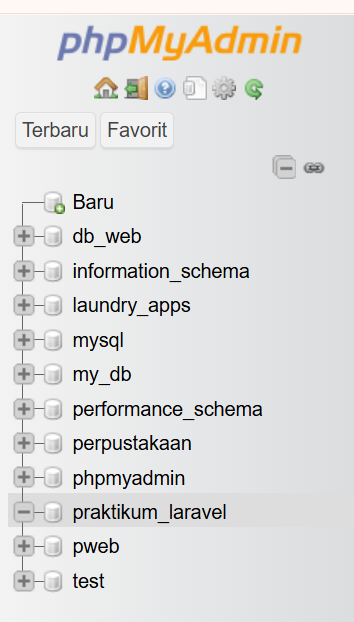
Pada tahap awal dilakukan pembuatan database menggunakan phpMyAdmin dengan nama praktikum_laravel. Database ini digunakan sebagai tempat penyimpanan data aplikasi Laravel.
b. Konfigurasi Database Laravel
Setelah database dibuat, langkah berikutnya adalah melakukan konfigurasi koneksi database pada file .env.
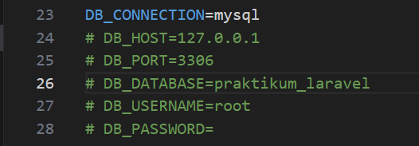
Konfigurasi tersebut digunakan agar Laravel dapat terhubung dengan database MySQL yang telah dibuat sebelumnya.
c. Menjalankan Laravel
Laravel dijalankan menggunakan terminal Visual Studio Code dengan perintah artisan.
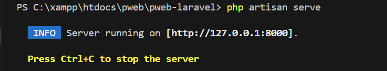
Perintah php artisan serve digunakan untuk menjalankan server lokal Laravel sehingga aplikasi dapat diakses melalui browser.
d. Membuat Model, Migration, Seeder, dan Controller
Pada tahap ini dibuat model Product beserta migration, seeder, dan controller menggunakan satu perintah artisan.
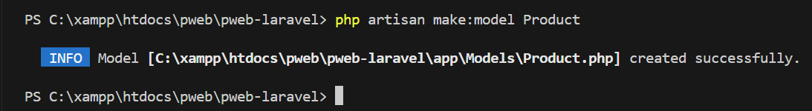
Perintah tersebut digunakan untuk membuat model Product, migration products, seeder ProductSeeder, dan controller ProductController secara otomatis sehingga proses pengembangan menjadi lebih cepat dan efisien.
e. Membuat Migration Products
Migration digunakan untuk membuat struktur tabel products pada database.
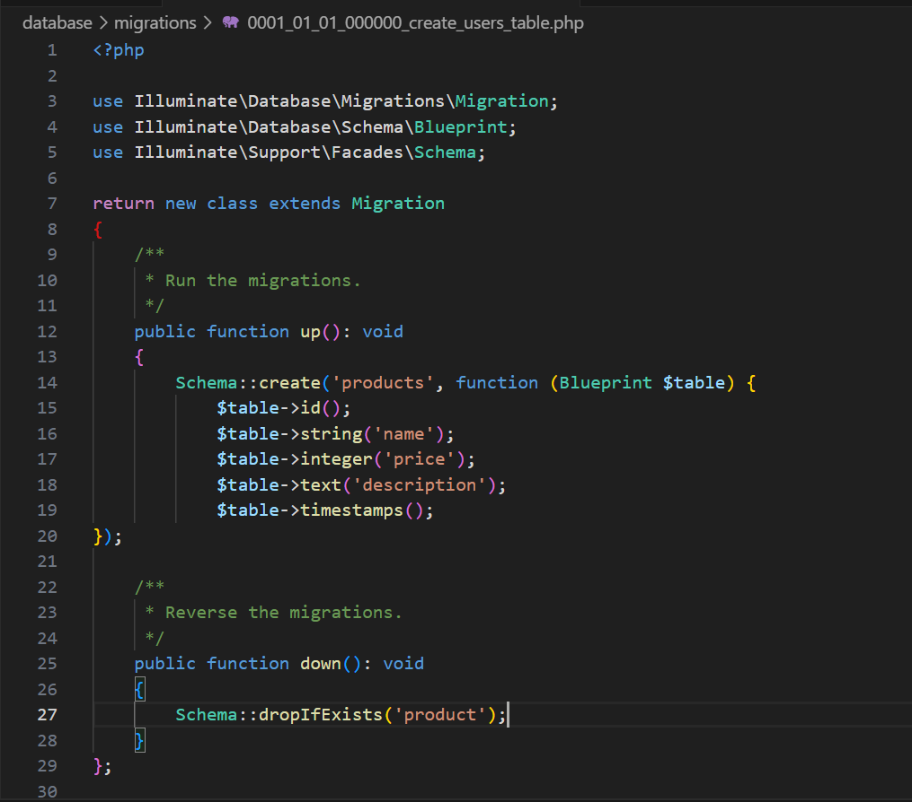
Struktur tabel products terdiri dari kolom id, name, price, description, dan timestamps. Kolom timestamps digunakan untuk menyimpan waktu pembuatan dan perubahan data.
f. Menjalankan Migration
Migration dijalankan untuk membuat tabel products pada database.
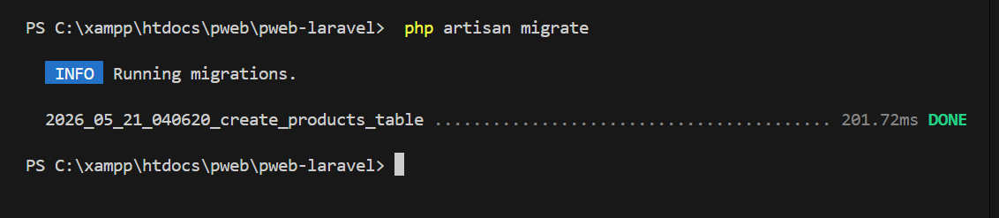
Perintah migrate digunakan untuk menjalankan seluruh file migration sehingga tabel otomatis dibuat pada database.
g. Membuat Seeder
Seeder dibuat untuk mengisi data awal pada tabel products.
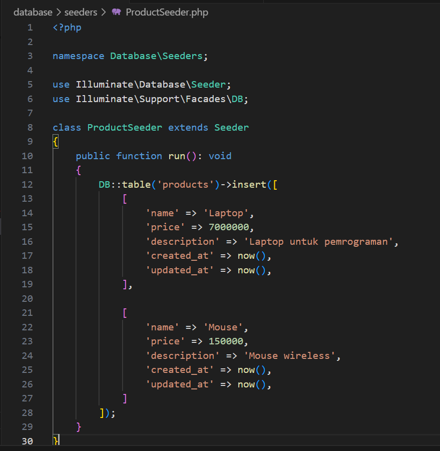
Seeder membantu developer dalam memasukkan data dummy secara otomatis tanpa harus mengetik data satu per satu pada database.
h. Menghubungkan Seeder
Seeder dihubungkan melalui file DatabaseSeeder.php.
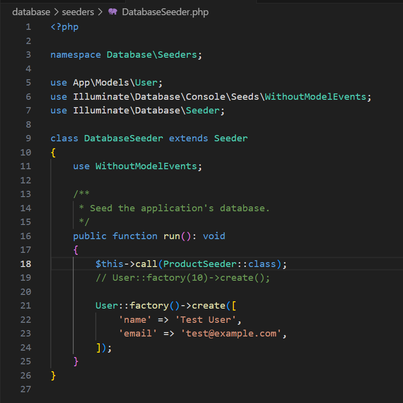
Kode tersebut digunakan untuk memanggil ProductSeeder agar Laravel dapat menjalankan seeder tersebut.
i. Menjalankan Seeder
Seeder dijalankan menggunakan perintah artisan berikut.
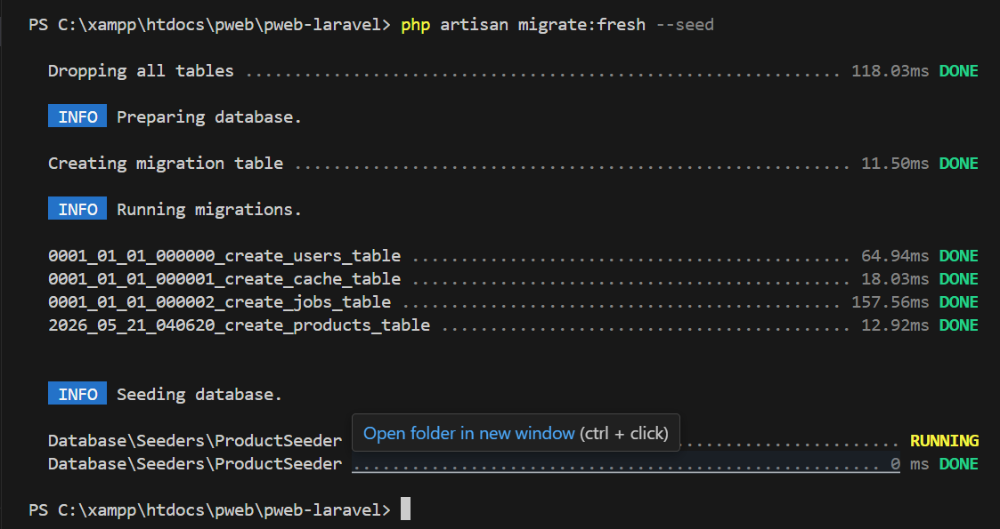
Perintah tersebut digunakan untuk menghapus seluruh tabel database, menjalankan ulang migration, dan mengisi data awal menggunakan seeder.
j. Membuat Model Product
Model Product digunakan untuk berinteraksi dengan tabel products pada database.
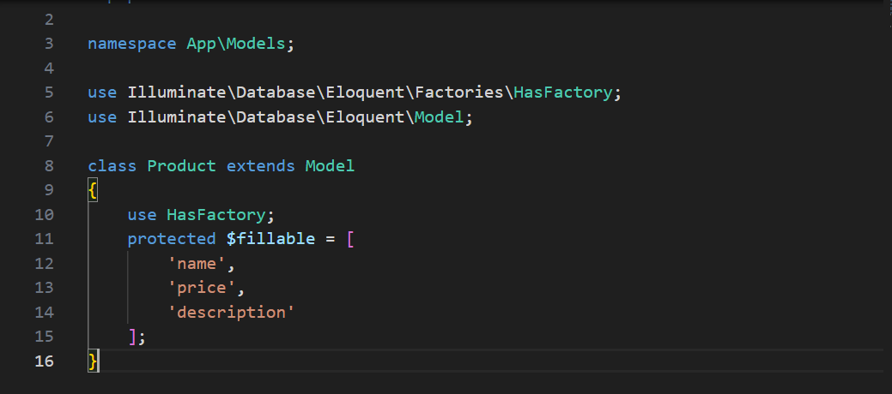
Model Laravel menggunakan Eloquent ORM sehingga proses manipulasi data menjadi lebih mudah dan sederhana.
k. Membuat Controller
Controller digunakan untuk mengatur logika aplikasi dan menghubungkan model dengan view.
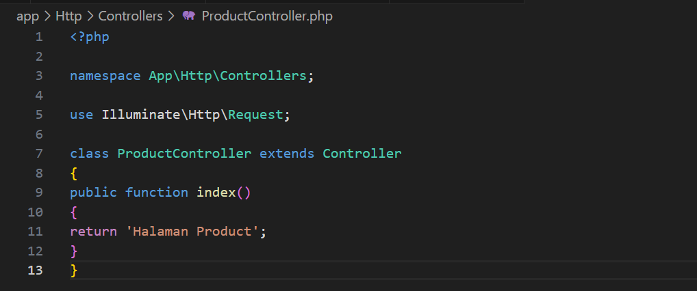
Pada praktikum ini controller digunakan untuk mengambil data products dari database kemudian mengirimkannya ke halaman view.
l. Membuat Routing
Routing digunakan untuk menghubungkan URL dengan controller Laravel.
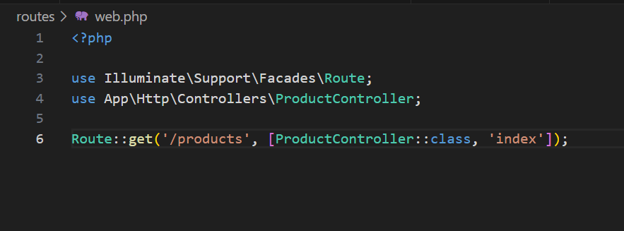
Routing tersebut digunakan agar halaman /products dapat menampilkan data dari ProductController.
m. Membuat View Products
View digunakan untuk menampilkan data produk ke halaman web menggunakan Blade Template Laravel.
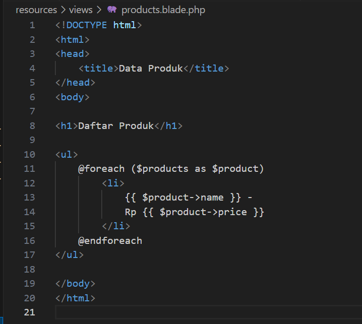
View products.blade.php digunakan untuk menampilkan daftar produk menggunakan perulangan foreach.
n. Hasil Akhir Program
Hasil akhir program berhasil menampilkan data produk dari database ke browser menggunakan Laravel.
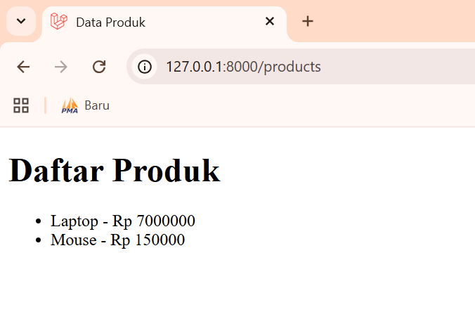
Data berhasil diambil dari database menggunakan model Product, kemudian dikirim ke controller dan ditampilkan pada view menggunakan Blade Template.
Hasil & Pembahasan
Pada praktikum ini berhasil dibuat aplikasi sederhana menggunakan framework Laravel dengan konsep MVC (Model View Controller). Praktikum dimulai dari konfigurasi database, pembuatan migration untuk membuat tabel products, pembuatan seeder untuk mengisi data awal, pembuatan model sebagai penghubung database, controller sebagai pengatur logika aplikasi, routing sebagai penghubung URL, serta view untuk menampilkan data produk pada halaman web.
Hasil akhir menunjukkan bahwa aplikasi Laravel berhasil menampilkan data produk dari database ke browser dengan baik. Selain itu, praktikum ini juga memberikan pemahaman mengenai alur kerja Laravel dalam membangun aplikasi web modern secara lebih terstruktur dan efisien.
Kesimpulan
Berdasarkan praktikum yang telah dilakukan dapat disimpulkan bahwa framework Laravel mempermudah proses pengembangan aplikasi web modern karena memiliki struktur yang terorganisir menggunakan konsep MVC. Fitur migration, seeding, routing, model, controller, dan view membantu developer dalam membangun aplikasi secara lebih terstruktur, efisien, dan mudah dikembangkan.
Pada praktikum ini berhasil dibuat aplikasi sederhana untuk menampilkan data produk dari database ke halaman web menggunakan Laravel sehingga mahasiswa dapat memahami dasar penggunaan Laravel dalam pengembangan aplikasi web.